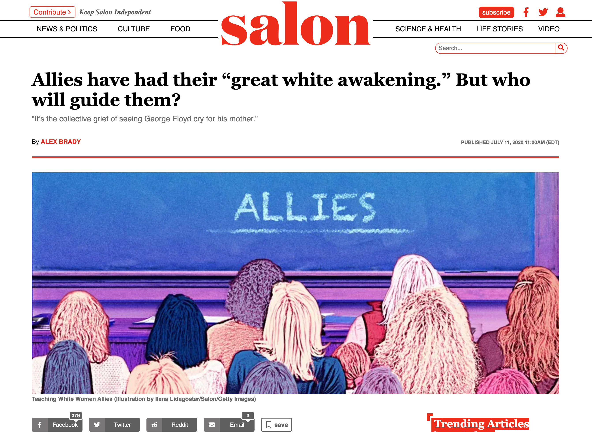
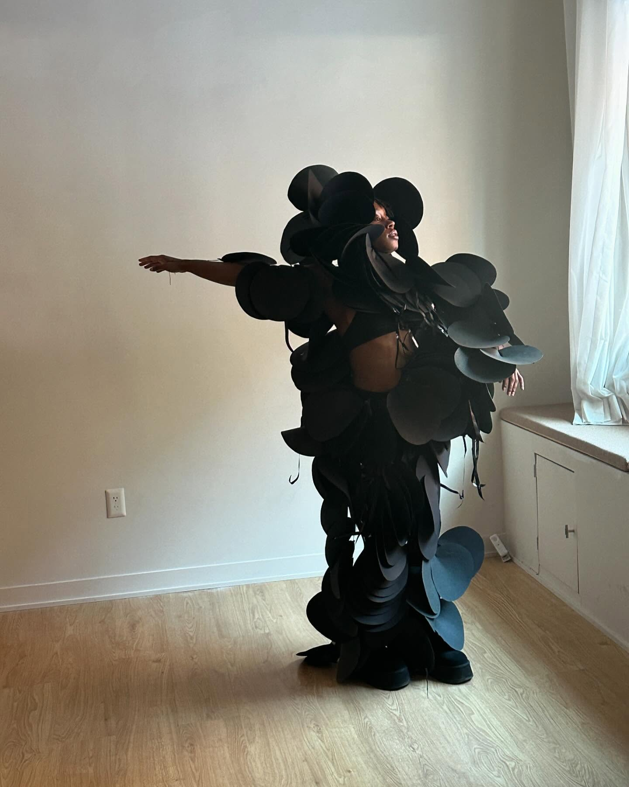
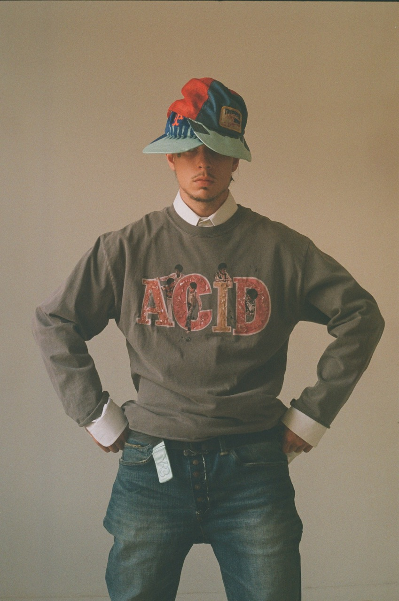
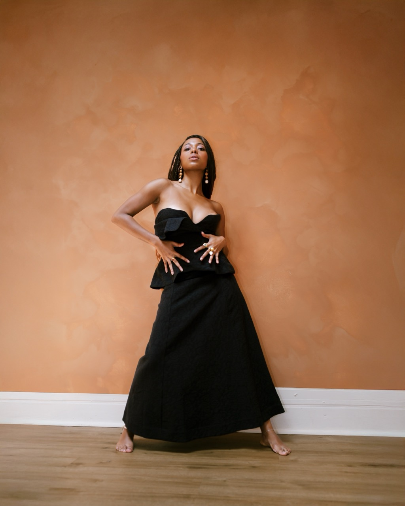
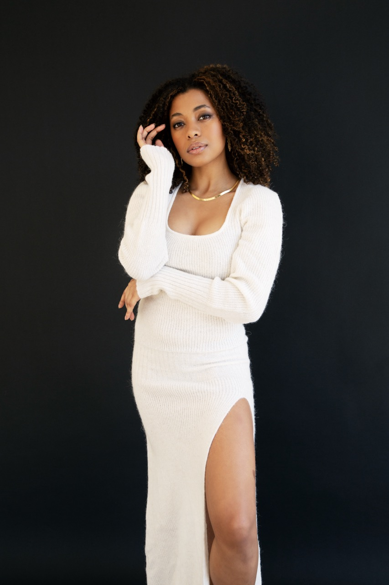
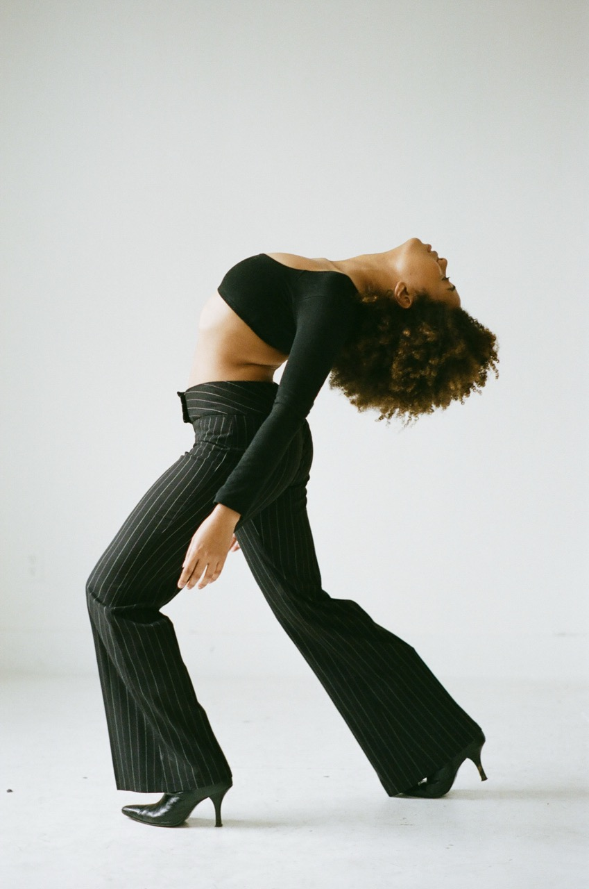

Salon feature
Click to read, right here.
Concept, craft, and execution across visual campaigns, experiential brand moments, movement direction, film, and brand identity.
 Headshot
HeadshotEditorials I produced and developed end to end: concept, art direction, styling, movement direction, and in listed cases, photography. Built entirely on secondhand, vintage, and reworked fashion, collaborating with independent artists.
Each shoot starts from a single reference thesis: an era, a silhouette, a piece of music, a building, or a film reference. Secondhand garments are sourced and treated as living material essential to the narrative and physical expression.
Styling vintage and reworked pieces, then directing how the clothes move on the body. Trained as a movement artist, I direct fashion the way choreography is directed: framing, lighting, and gesture as integral decisions. Working with photographers and cinematographers to capture dynamic movement.
A multiyear portfolio of movement-based editorial work: a deep understanding of how to capture moving image that translates across platforms and resonates with audiences, and a community of artists and technicians who create best-in-class work.
Click on any cover to open that project's full video and image set.






Each cover opens its own collection. Add frames to a project by extending its data-images list; add a project by copying a whole .vr block.
Paid speaking engagements where brands leveraged my voice to connect with their desired audiences. Hosted in collaboration with my platform, Allies Doing Work.
Sustainability and inclusion work spoken about from my lived experience. The Grayson campaign paired the platform with a $40,000 commitment to causes directly impacting women of color.
National press followed: Salon's "Allies have had their 'great white awakening'" (July 2020), Levi's Off the Cuff's Women's Equality Day interview "Tahia & Eryn on Spaces for People of Color" (August 2020), and a Workmade Diaries spotlight talent feature.

Click to read, right here.

Click to read, right here.
Click to watch, right here in the deck.
 Headshot
Headshot